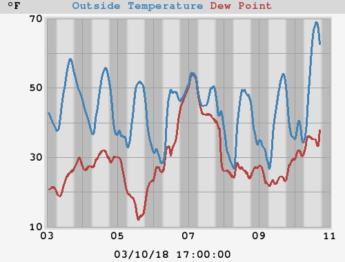
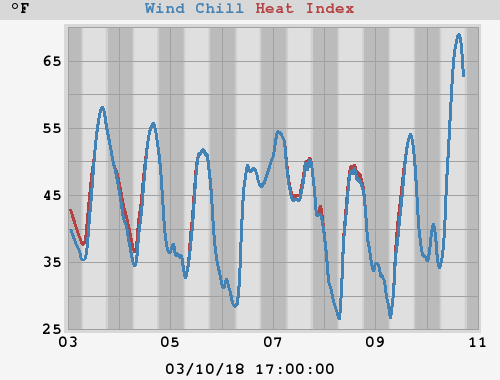
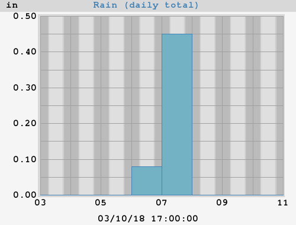
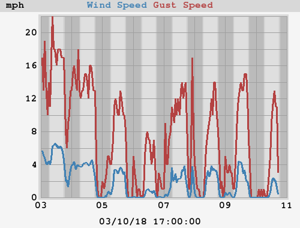
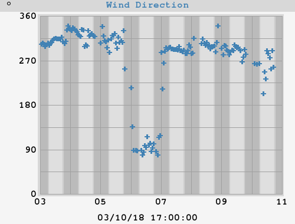
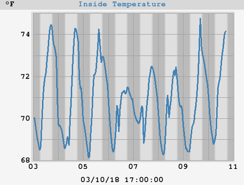
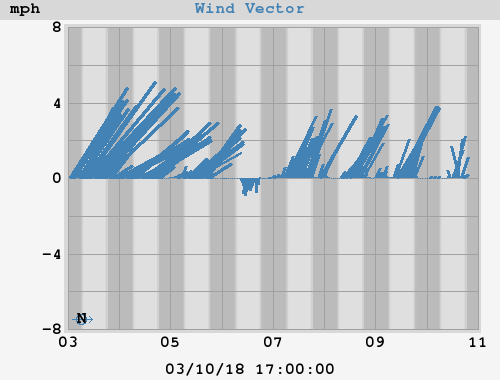

Weekly Statistics and Plots







|
High Temperature Low Temperature |
79.1°F at 14:24:14 (Sunday) 55.0°F at 02:45:22 (Monday) |
| High Heat Index | 79.1°F at 14:24:14 (Sunday) |
| Low Wind Chill | 55.0°F at 02:45:22 (Monday) |
|
High Humidity Low Humidity |
98% 02:58:58 (Sunday) 62% 13:09:44 (Sunday) |
|
High Dewpoint Low Dewpoint |
66.6°F 14:14:46 (Sunday) 53.6°F 02:45:22 (Monday) |
|
High Barometer Low Barometer |
29.870 inHg at 08:53:00 (Sunday) 29.778 inHg at 18:15:00 (Sunday) |
| Rain Total | 0.00 in |
| High Rain Rate | 0.00 in/hr at 00:00:02 (Sunday) |
| High Wind Speed | 10 mph from 295° at 15:44:18 (Sunday) |
| Average Wind | 1 mph |
| RMS Wind | 2 mph |
|
Vector Average Speed Vector Average Direction |
2 mph 319° |
|
High Inside Temperature Low Inside Temperature |
77.5°F at 18:52:58 (Sunday) 67.5°F at 04:58:58 (Sunday) |
|
High Temperature Low Temperature |
82.1°F at 01/08/16 15:35:23 55.0°F at 08/08/16 02:45:22 |
| High Heat Index | 84.4°F at 02/08/16 14:17:47 |
| Low Wind Chill | 55.0°F at 08/08/16 02:45:22 |
|
High Humidity Low Humidity |
98% at 03/08/16 05:15:14 57% at 01/08/16 15:36:51 |
|
High Dewpoint Low Dewpoint |
67.7°F at 01/08/16 12:52:27 53.6°F at 08/08/16 02:45:22 |
|
High Barometer Low Barometer |
30.040 inHg at 02/08/16 07:46:01 29.778 inHg at 07/08/16 18:15:00 |
| Rain Total | 0.00 in |
| High Rain Rate | 0.00 in/hr at 01/08/16 00:00:01 |
| High Wind Speed | 12 mph from 18° at 01/08/16 12:55:53 |
| Average Wind | 1 mph |
| RMS Wind | 2 mph |
|
Vector Average Speed Vector Average Direction |
2 mph 311° |
|
High Inside Temperature Low Inside Temperature |
78.6°F at 01/08/16 17:25:59 67.2°F at 05/08/16 07:00:58 |